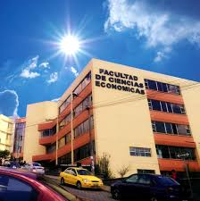
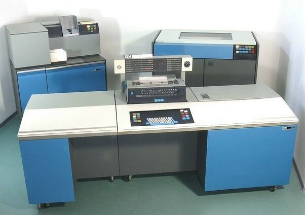
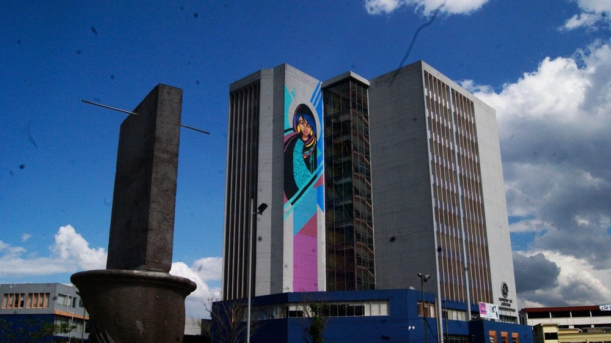
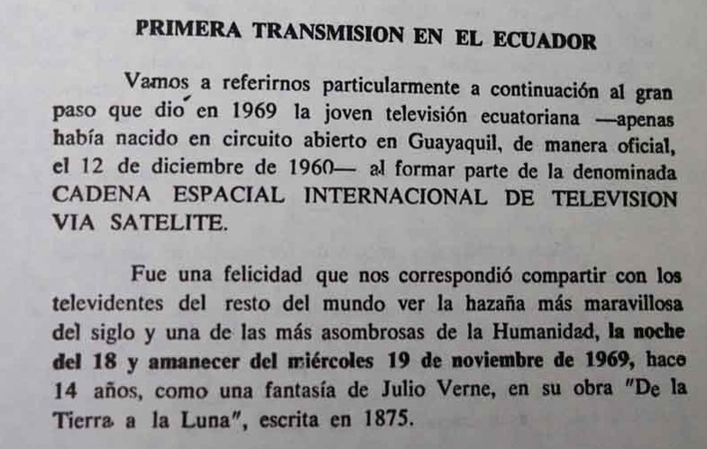
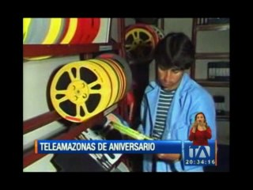
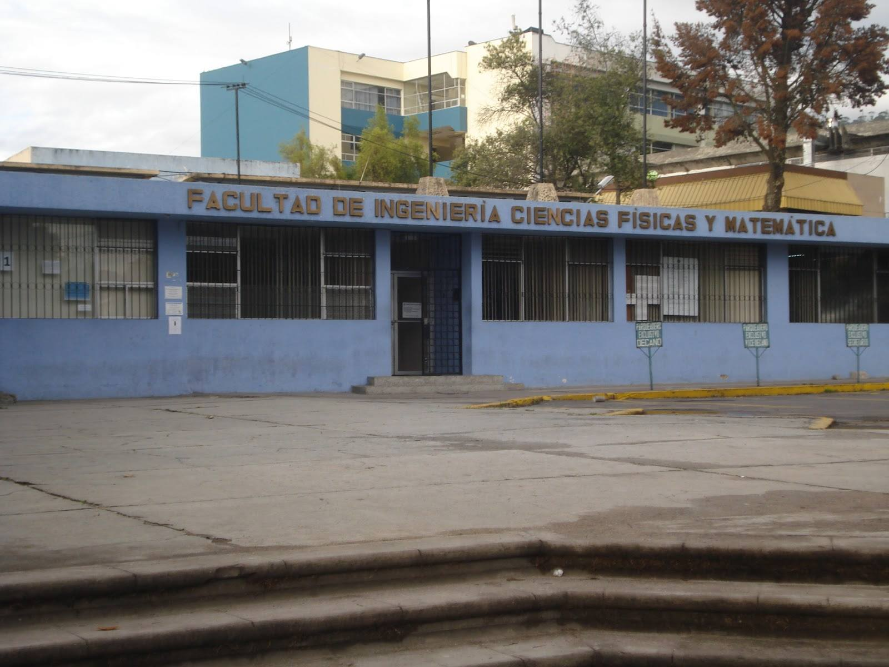

Inicio de la modernización telefónica en el Ecuador
Entró en funcionamiento la central telefónica Mariscal Sucre, con una capacidad de 3.000 líneas telefónicas

Desarrollo de estudios económicos y administrativos
Se fortalece la formación en economía y administración en la UCE, base para la futura Facultad de Ciencias Administrativas.

Consolidación de la infraestructura científica
Se encuntra casi concluido el Pabellón del Instituto de Ensayos de Materiales y Estática.

Nuevos Laboratorios
Implementación de equipos técnicos para las carreras de ingeniería y ciencias.
Primera transmisión oficial de televisión
se realiza desde el Puerto Principal (Guayaquil), con señal abierta en el canal 4.

Segunda generación de computadoras
Para 1967 funcionaban centros de cómputo con una IBM1130

Creación de la Facultad de Ciencias Administrativas
El Consejo Universitario aprueba la creación de la facultad con tres especialidades: Administración Pública, Empresas y Contabilidad.

Transmisión del alunizaje en Ecuador
El Ecuador presenció la llegada del hombre a la Luna mediante transmisión satelital internacional difundida por Canal 10.

Clausura de la UCE
Se dio la clausura más prolongada en la historia de la UCE: 9 años

Comunicaciones vía Satélite
Se inaugura la Estación Terrena de Conocoto e inicia la comunicación satelital internacional del Ecuador.

Primera televisión a color en Ecuador
Teleamazonas realiza la primera transmisión oficial a color, modernizando la televisión ecuatoriana.

Origen histórico de la Facultad y la carrera
Se crea la Escuela de Ciencias para formar matemáticos.